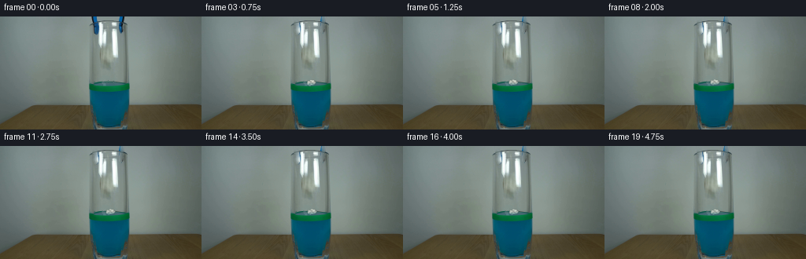
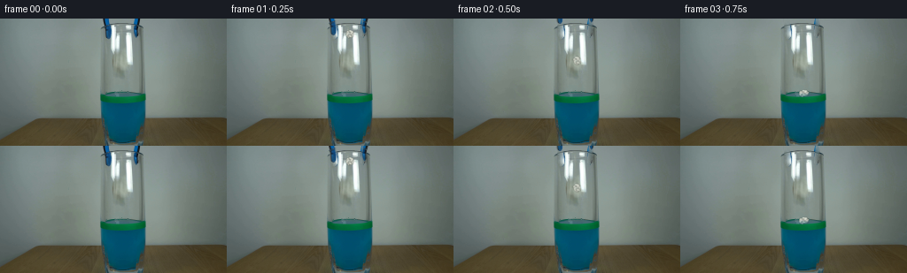
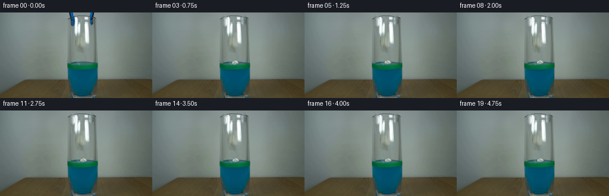
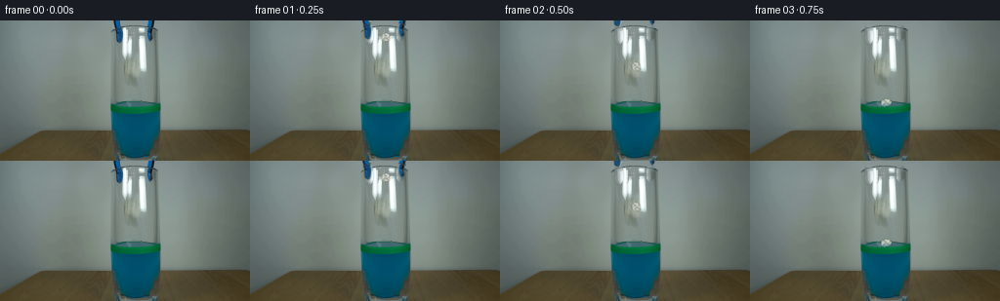
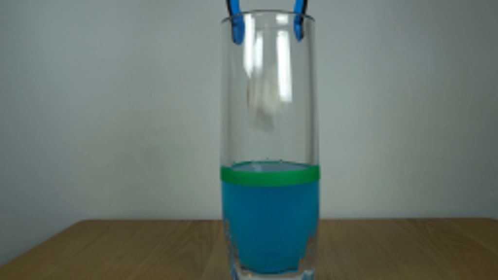
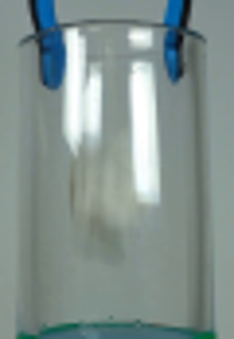
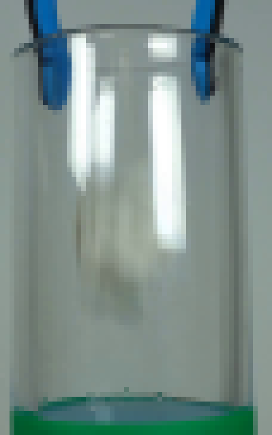
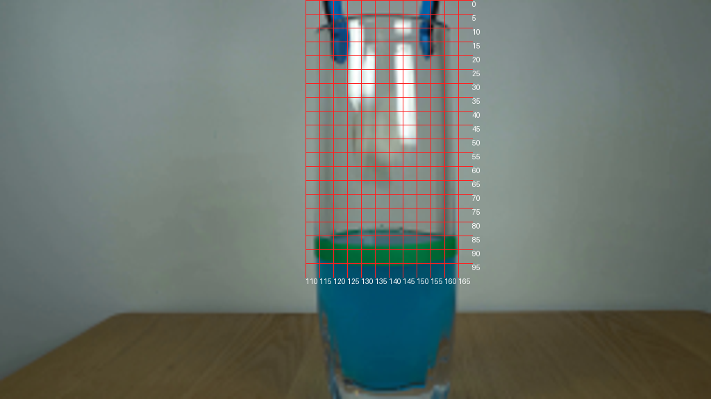
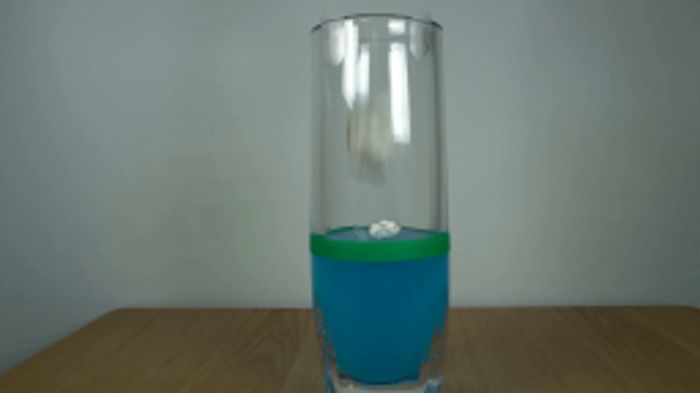

CODING AGENTS AS PIXEL WORLD MODELS
traex/GPT-6.1-Sol · 0137
点击播放 · 原生 RGB 像素
逐轮保存的候选
回放视频、检查图与代码变化。
每份候选均可单独播放。实际图片检查记录在下方工具轨迹中。
候选 01播放与检查图
点击播放 · 原生 RGB 像素


展开代码变化
--- 上一保存版本
+++ 本次保存版本
@@ -0,0 +1,180 @@
+from pathlib import Path
+import math
+import numpy as np
+from PIL import Image, ImageDraw, ImageFilter
+import cv2
+from scipy.ndimage import gaussian_filter
+import artifact_io
+
+ROOT = Path(__file__).resolve().parent
+W,H = 256,144
+S = 4
+
+
+def mix(a,b,m):
+ return a*(1-m[...,None])+b*m[...,None]
+
+
+def make_tool_masks():
+ masks=[]
+ # Each tip and its narrow blue-black shaft, preserving the cylindrical rim.
+ for poly in [ [(116,-3),(123,-3),(124,3),(124,9),(125,14),(125,20),(123,23),(120,23),(118,19),(118,13),(117,8),(116,3)],
+ [(153,-3),(159,-3),(158,4),(156,10),(156,16),(155,20),(153,22),(151,19),(151,13),(152,7)]]:
+ im=Image.new('L',(W*S,H*S))
+ d=ImageDraw.Draw(im);d.polygon([(round(x*S),round(y*S)) for x,y in poly], fill=255)
+ m=np.asarray(im.resize((W,H),Image.Resampling.LANCZOS)).astype(float)/255
+ masks.append(m)
+ return masks
+
+
+def clean_tool(base,masks):
+ mask=np.maximum(*masks)
+ mm=(mask>.06).astype('uint8')*255
+ clean=cv2.inpaint(base,mm,5,cv2.INPAINT_TELEA).astype(float)
+ # The glass rim continues behind the tool jaws. Restore just those
+ # short, curved fragments obscured in the photograph.
+ lay=Image.new('RGBA',(W*S,H*S));d=ImageDraw.Draw(lay)
+ for points in [[(115.6,9.7),(118,8.4),(121,7.55),(124.9,6.8)],[(149.9,6.9),(153,7.5),(155.5,8.25),(158.5,9.25)]]:
+ d.line([(int(x*S),int(y*S)) for x,y in points],fill=(46,62,61,180),width=3)
+ d.line([(int(x*S),int((y+.75)*S)) for x,y in points],fill=(156,171,167,110),width=2)
+ la=np.asarray(lay.resize((W,H),Image.Resampling.LANCZOS)).astype(float)
+ clean=mix(clean,la[:,:,:3],la[:,:,3]/255*mask)
+ return mix(base.astype(float),clean,mask)
+
+
+def paper_sprite(t,wet):
+ # An irregular, gently crumpled sheet, modeled by shaded paper folds.
+ N=160
+ im=Image.new('RGBA',(N,N))
+ d=ImageDraw.Draw(im)
+ outer=np.array([[34,44],[49,29],[63,32],[80,20],[96,29],[119,36],
+ [126,56],[141,71],[129,93],[128,108],[106,125],
+ [83,119],[61,132],[42,115],[28,90],[31,70]],float)
+ # Inner fold vertices form an asymmetric ridge pattern.
+ v=np.vstack((outer,[[65,56],[94,52],[106,76],[91,96],[64,101],[50,78],[77,78]]))
+ tris=[(0,1,16),(1,2,16),(2,3,17),(2,17,16),(3,4,17),(4,5,17),
+ (5,6,18),(5,18,17),(6,7,18),(7,8,18),(8,9,19),(8,19,18),
+ (9,10,19),(10,11,19),(11,12,20),(11,20,19),(12,13,20),
+ (13,14,21),(13,21,20),(14,15,21),(15,0,16),(15,16,21),
+ (16,17,22),(17,18,22),(18,19,22),(19,20,22),(20,21,22),(21,16,22)]
+ shades=[.93,.77,.87,.64,1.0,.87,.75,.96,.67,.79,.68,.9,.69,.83,.57,.95,.77,.89,.62,.86,.73,.98,.7,.87,.58,.88,.66]
+ # Wet edges darken and become a little blue-translucent; the upper folds
+ # remain white, retaining the unmistakable texture of paper.
+ d.polygon([tuple(p) for p in outer], fill=(188,197,189,255))
+ for tri,q in zip(tris,shades):
+ pts=v[list(tri)]
+ yy=np.mean(pts[:,1])/N
+ absorption=wet*(.14+.50*max(0,(yy-.45)/.55))
+ color=np.array([231,234,220])*q
+ color=color*(1-absorption)+np.array([74,134,140])*absorption
+ d.polygon([tuple(p) for p in pts],fill=tuple(np.clip(color,0,255).astype(int))+(255,))
+ # Several thin, soft seams describe the flattened sheet edges and curls.
+ d.line([tuple(v[0]),tuple(v[16]),tuple(v[17]),tuple(v[5])],fill=(231,234,222,180),width=2)
+ d.line([tuple(v[21]),tuple(v[22]),tuple(v[19]),tuple(v[10])],fill=(98,115,109,145),width=2)
+ d.line([tuple(v[16]),tuple(v[22]),tuple(v[18])],fill=(246,247,235,190),width=2)
+ d.line([tuple(v[12]),tuple(v[20]),tuple(v[21])],fill=(229,232,217,180),width=3)
+ # Small folded-over tab at the upper edge.
+ d.polygon([(62,33),(80,20),(96,29),(86,41)],fill=(215,223,211,255))
+ d.line([(65,33),(79,22),(96,29)],fill=(243,246,233,210),width=2)
+ a=np.asarray(im).astype(float)
+ rng=np.random.default_rng(47)
+ tex=gaussian_filter(rng.normal(0,1,(N,N)),.9)*2.2
+ a[:,:,:3]+=tex[:,:,None]
+ return Image.fromarray(np.uint8(np.clip(a,0,255)))
+
+
+def draw_paper(frame,base,cx,cy,width,height,angle,wet,submerged):
+ spr=paper_sprite(0,wet)
+ # The silhouette in the 160-square template spans about 110 pixels.
+ target=(max(1,round(width*S*160/113)),max(1,round(height*S*160/112)))
+ spr=spr.resize(target,Image.Resampling.LANCZOS).rotate(angle,Image.Resampling.BICUBIC,expand=True)
+ lay=Image.new('RGBA',(W*S,H*S))
+ lay.alpha_composite(spr,(round(cx*S-spr.width/2),round(cy*S-spr.height/2)))
+ lay=lay.filter(ImageFilter.GaussianBlur(.37*S))
+ a=np.asarray(lay.resize((W,H),Image.Resampling.LANCZOS)).astype(float)
+ alpha=a[:,:,3]/255
+ yy,xx=np.mgrid[:H,:W]
+ # The existing front-wall highlights are reflected light, and lie in
+ # front of the falling paper rather than moving with it.
+ lum=np.mean(base.astype(float),axis=2)
+ glare=np.clip((lum-145)/90,0,.68)*((yy>10)&(yy<69)&(xx>123)&(xx<151))
+ alpha*=1-glare
+ # At the liquid surface the lowest paper folds are optically blue, and
+ # the fixed green marking on the front glass hides the far lower edge.
+ if submerged:
+ depth=np.clip((yy-83.5)/3,0,1)
+ a[:,:,:3]=a[:,:,:3]*(1-.34*depth[:,:,None])+np.array([12,101,125])[None,None,:]*(.34*depth[:,:,None])
+ band=(base[:,:,1]>base[:,:,0]*1.6)&(base[:,:,1]>base[:,:,2]*1.25)&(yy>=84)&(yy<=95)&(xx>112)&(xx<166)
+ alpha[band]*=.01
+ return mix(frame,a[:,:,:3],alpha)
+
+
+def water_effect(frame,t,impact):
+ if t<impact:return frame
+ dt=t-impact
+ yy,xx=np.mgrid[:H,:W]
+ cx=138.5
+ # The disturbed surface occupies an ellipse inside the green marker.
+ surf=((xx-139)/24)**2+((yy-85)/3.1)**2<1
+ surf&=(yy<87)
+ # Faint concentric wavelets reflecting overhead light. Elliptical
+ # perspective foreshortening leaves the stationary glass untouched.
+ r=np.sqrt((xx-cx)**2+((yy-84.5)*5.3)**2)
+ wav=np.zeros((H,W),float)
+ for j in range(3):
+ radius=dt*21-j*3.6
+ if radius>0:
+ amp=6*math.exp(-dt*1.7)*(1-.14*j)
+ wav+=amp*np.exp(-((r-radius)/.9)**2)
+ wav-=amp*.50*np.exp(-((r-radius-1)/.9)**2)
+ # Tiny local meniscus around the wet ball.
+ wav+=2.2*math.exp(-dt*.5)*np.exp(-((r-7.5)/1.1)**2)
+ frame=frame.copy()
+ frame+=wav[:,:,None]*surf[:,:,None]*np.array([.77,1.05,1.06])[None,None,:]
+ return frame
+
+
+def main():
+ base=np.asarray(Image.open(ROOT/'first_frame.png').convert('RGB'))
+ masks=make_tool_masks()
+ clean=clean_tool(base,masks)
+ frames=[base.copy()]
+ impact=.67
+ for n in range(1,20):
+ t=n/4
+ frame=clean.copy()
+ # Releasing the jaws, then lifting the grabber vertically out of view.
+ up= min(32,4+52*max(0,t-.25))
+ spread=min(2.1,7*t)
+ for j,m in enumerate(masks):
+ dx=(-1 if j==0 else 1)*spread
+ mat=np.float32([[1,0,dx],[0,1,-up]])
+ ma=cv2.warpAffine(m.astype('float32'),mat,(W,H),flags=cv2.INTER_LINEAR)
+ co=cv2.warpAffine(base.astype('float32')*m[:,:,None],mat,(W,H),flags=cv2.INTER_LINEAR)
+ colors=co/np.maximum(ma[:,:,None],1e-5)
+ frame=mix(frame,colors,ma)
+ frame=water_effect(frame,t,impact)
+ if t<impact:
+ age=max(0,t-.1)
+ cy=13+218*age*age
+ cx=138+1.8*math.sin(age*5)
+ angle=-14+age*98
+ width=9.5+math.sin(age*10)*.45
+ height=10.5-1.0*math.sin(age*7)
+ frame=draw_paper(frame,base,cx,cy,width,height,angle,0,False)
+ else:
+ dt=t-impact
+ # The dry trapped air holds the light paper at the interface.
+ # Its first impact makes a short bob, then it drifts only slightly.
+ cy=84.3+1.3*math.exp(-dt*3.3)*math.sin(dt*12)-.15*math.exp(-dt)
+ cx=139.3+1.3*(1-math.exp(-dt*.6))+.25*math.sin(dt*1.7)*math.exp(-dt)
+ width=11.7+.65*(1-math.exp(-dt*2))
+ height=8.0-.75*(1-math.exp(-dt*1.3))
+ angle=6+11*math.exp(-dt*2)*math.sin(dt*8)
+ wet=.8*(1-math.exp(-dt*.7))
+ frame=draw_paper(frame,base,cx,cy,width,height,angle,wet,True)
+ frames.append(np.clip(np.rint(frame),0,255).astype('uint8'))
+ frames=np.asarray(frames,dtype='uint8')
+ artifact_io.save(frames,ROOT)
+
+if __name__=='__main__':main()
候选 02播放与检查图
点击播放 · 原生 RGB 像素


展开代码变化
--- 上一保存版本
+++ 本次保存版本
@@ -18,8 +18,8 @@
def make_tool_masks():
masks=[]
# Each tip and its narrow blue-black shaft, preserving the cylindrical rim.
- for poly in [ [(116,-3),(123,-3),(124,3),(124,9),(125,14),(125,20),(123,23),(120,23),(118,19),(118,13),(117,8),(116,3)],
- [(153,-3),(159,-3),(158,4),(156,10),(156,16),(155,20),(153,22),(151,19),(151,13),(152,7)]]:
+ for poly in [ [(115.4,-3),(123.7,-3),(124.4,3),(126,10),(126,19),(125,22),(123,24),(120,23),(118.2,21),(117.5,8),(116,3)],
+ [(151,-3),(159.5,-3),(158.2,3),(157.5,8),(156.3,12),(156,18),(155,21.5),(152.5,22),(150,18),(150,10),(150.5,6)]]:
im=Image.new('L',(W*S,H*S))
d=ImageDraw.Draw(im);d.polygon([(round(x*S),round(y*S)) for x,y in poly], fill=255)
m=np.asarray(im.resize((W,H),Image.Resampling.LANCZOS)).astype(float)/255
@@ -29,7 +29,9 @@
def clean_tool(base,masks):
mask=np.maximum(*masks)
- mm=(mask>.06).astype('uint8')*255
+ # Inpaint beyond the antialiased silhouette, so no residual blue fringe
+ # can be used as a source color for the newly uncovered background.
+ mm=cv2.dilate((mask>.025).astype('uint8')*255,np.ones((3,3),np.uint8))
clean=cv2.inpaint(base,mm,5,cv2.INPAINT_TELEA).astype(float)
# The glass rim continues behind the tool jaws. Restore just those
# short, curved fragments obscured in the photograph.
可观测工具轨迹
实际执行的命令与返回图片。
命令 1exit 0
/bin/bash -lc 'ls -la; cat prompt.txt; cat GENERATION_RULES.md'
命令 2exit 0
/bin/bash -lc "cat artifact_io.py; python - <<'PY'
from PIL import Image
im=Image.open('first_frame.png'); print(im.size); im.resize((1024,576)).save('.tmp/large.png')
PY"命令 3exit 0
/bin/bash -lc "python - <<'PY'
from PIL import Image
im=Image.open('first_frame.png'); im.crop((109,0,169,87)).resize((480,696)).save('.tmp/crop.png')
PY"命令 4exit 0
/bin/bash -lc "python - <<'PY'
from PIL import Image, ImageEnhance, ImageFilter
im=Image.open('first_frame.png'); im.crop((111,0,168,91)).resize((456,728),Image.Resampling.NEAREST).save('.tmp/pixels.png')
PY"命令 5exit 0
/bin/bash -lc "python - <<'PY'
from PIL import Image, ImageDraw
im=Image.open('first_frame.png').resize((1024,576)); d=ImageDraw.Draw(im)
for x in range(110,170,5):
d.line((x*4,0,x*4,400),fill=(255,30,30),width=1); d.text((x*4,400),str(x),fill='white')
for y in range(0,100,5):
d.line((440,y*4,680,y*4),fill=(255,30,30),width=1);d.text((680,y*4),str(y),fill='white')
im.save('.tmp/grid.png')
PY"命令 6exit 0
/bin/bash -lc "python - <<'PY' import importlib.util for x in ['numpy','scipy','cv2','PIL']: print(x, bool(importlib.util.find_spec(x))) PY"
命令 7exit 0
/bin/bash -lc "cat > generate.py <<'PY'
from pathlib import Path
import math
import numpy as np
from PIL import Image, ImageDraw, ImageFilter
import cv2
from scipy.ndimage import gaussian_filter
import artifact_io
ROOT = Path(__file__).resolve().parent
W,H = 256,144
S = 4
def mix(a,b,m):
return a*(1-m[...,None])+b*m[...,None]
def make_tool_masks():
masks=[]
# Each tip and its narrow blue-black shaft, preserving the cylindrical rim.
for poly in [ [(116,-3),(123,-3),(124,3),(124,9),(125,14),(125,20),(123,23),(120,23),(118,19),(118,13),(117,8),(116,3)],
[(153,-3),(159,-3),(158,4),(156,10),(156,16),(155,20),(153,22),(151,19),(151,13),(152,7)]]:
im=Image.new('L',(W*S,H*S))
d=ImageDraw.Draw(im);d.polygon([(round(x*S),round(y*S)) for x,y in poly], fill=255)
m=np.asarray(im.resize((W,H),Image.Resampling.LANCZOS)).astype(float)/255
masks.append(m)
return masks
def clean_tool(base,masks):
mask=np.maximum(*masks)
mm=(mask>.06).astype('uint8')*255
clean=cv2.inpaint(base,mm,5,cv2.INPAINT_TELEA).astype(float)
# The glass rim continues behind the tool jaws. Restore just those
# short, curved fragments obscured in the photograph.
lay=Image.new('RGBA',(W*S,H*S));d=ImageDraw.Draw(lay)
for points in [[(115.6,9.7),(118,8.4),(121,7.55),(124.9,6.8)],[(149.9,6.9),(153,7.5),(155.5,8.25),(158.5,9.25)]]:
d.line([(int(x*S),int(y*S)) for x,y in points],fill=(46,62,61,180),width=3)
d.line([(int(x*S),int((y+.75)*S)) for x,y in points],fill=(156,171,167,110),width=2)
la=np.asarray(lay.resize((W,H),Image.Resampling.LANCZOS)).astype(float)
clean=mix(clean,la[:,:,:3],la[:,:,3]/255*mask)
return mix(base.astype(float),clean,mask)
def paper_sprite(t,wet):
# An irregular, gently crumpled sheet, modeled by shaded paper folds.
N=160
im=Image.new('RGBA',(N,N))
d=ImageDraw.Draw(im)
outer=np.array([[34,44],[49,29],[63,32],[80,20],[96,29],[119,36],
[126,56],[141,71],[129,93],[128,108],[106,125],
[83,119],[61,132],[42,115],[28,90],[31,70]],float)
# Inner fold vertices form an asymmetric ridge pattern.
v=np.vstack((outer,[[65,56],[94,52],[106,76],[91,96],[64,101],[50,78],[77,78]]))
tris=[(0,1,16),(1,2,16),(2,3,17),(2,17,16),(3,4,17),(4,5,17),
(5,6,18),(5,18,17),(6,7,18),(7,8,18),(8,9,19),(8,19,18),
(9,10,19),(10,11,19),(11,12,20),(11,20,19),(12,13,20),
(13,14,21),(13,21,20),(14,15,21),(15,0,16),(15,16,21),
(16,17,22),(17,18,22),(18,19,22),(19,20,22),(20,21,22),(21,16,22)]
shades=[.93,.77,.87,.64,1.0,.87,.75,.96,.67,.79,.68,.9,.69,.83,.57,.95,.77,.89,.62,.86,.73,.98,.7,.87,.58,.88,.66]
# Wet edges darken and become a little blue-translucent; the upper folds
# remain white, retaining the unmistakable texture of paper.
d.polygon([tuple(p) for p in outer], fill=(188,197,189,255))
for tri,q in zip(tris,shades):
pts=v[list(tri)]
yy=np.mean(pts[:,1])/N
absorption=wet*(.14+.50*max(0,(yy-.45)/.55))
color=np.array([231,234,220])*q
color=color*(1-absorption)+np.array([74,134,140])*absorption
d.polygon([tuple(p) for p in pts],fill=tuple(np.clip(color,0,255).astype(int))+(255,))
# Several thin, soft seams describe the flattened sheet edges and curls.
d.line([tuple(v[0]),tuple(v[16]),tuple(v[17]),tuple(v[5])],fill=(231,234,222,180),width=2)
d.line([tuple(v[21]),tuple(v[22]),tuple(v[19]),tuple(v[10])],fill=(98,115,109,145),width=2)
d.line([tuple(v[16]),tuple(v[22]),tuple(v[18])],fill=(246,247,235,190),width=2)
d.line([tuple(v[12]),tuple(v[20]),tuple(v[21])],fill=(229,232,217,180),width=3)
# Small folded-over tab at the upper edge.
d.polygon([(62,33),(80,20),(96,29),(86,41)],fill=(215,223,211,255))
d.line([(65,33),(79,22),(96,29)],fill=(243,246,233,210),width=2)
a=np.asarray(im).astype(float)
rng=np.random.default_rng(47)
tex=gaussian_filter(rng.normal(0,1,(N,N)),.9)*2.2
a[:,:,:3]+=tex[:,:,None]
return Image.fromarray(np.uint8(np.clip(a,0,255)))
def draw_paper(frame,base,cx,cy,width,height,angle,wet,submerged):
spr=paper_sprite(0,wet)
# The silhouette in the 160-square template spans about 110 pixels.
target=(max(1,round(width*S*160/113)),max(1,round(height*S*160/112)))
spr=spr.resize(target,Image.Resampling.LANCZOS).rotate(angle,Image.Resampling.BICUBIC,expand=True)
lay=Image.new('RGBA',(W*S,H*S))
lay.alpha_composite(spr,(round(cx*S-spr.width/2),round(cy*S-spr.height/2)))
lay=lay.filter(ImageFilter.GaussianBlur(.37*S))
a=np.asarray(lay.resize((W,H),Image.Resampling.LANCZOS)).astype(float)
alpha=a[:,:,3]/255
yy,xx=np.mgrid[:H,:W]
# The existing front-wall highlights are reflected light, and lie in
# front of the falling paper rather than moving with it.
lum=np.mean(base.astype(float),axis=2)
glare=np.clip((lum-145)/90,0,.68)*((yy>10)&(yy<69)&(xx>123)&(xx<151))
alpha*=1-glare
# At the liquid surface the lowest paper folds are optically blue, and
# the fixed green marking on the front glass hides the far lower edge.
if submerged:
depth=np.clip((yy-83.5)/3,0,1)
a[:,:,:3]=a[:,:,:3]*(1-.34*depth[:,:,None])+np.array([12,101,125])[None,None,:]*(.34*depth[:,:,None])
band=(base[:,:,1]>base[:,:,0]*1.6)&(base[:,:,1]>base[:,:,2]*1.25)&(yy>=84)&(yy<=95)&(xx>112)&(xx<166)
alpha[band]*=.01
return mix(frame,a[:,:,:3],alpha)
def water_effect(frame,t,impact):
if t<impact:return frame
dt=t-impact
yy,xx=np.mgrid[:H,:W]
cx=138.5
# The disturbed surface occupies an ellipse inside the green marker.
surf=((xx-139)/24)**2+((yy-85)/3.1)**2<1
surf&=(yy<87)
# Faint concentric wavelets reflecting overhead light. Elliptical
# perspective foreshortening leaves the stationary glass untouched.
r=np.sqrt((xx-cx)**2+((yy-84.5)*5.3)**2)
wav=np.zeros((H,W),float)
for j in range(3):
radius=dt*21-j*3.6
if radius>0:
amp=6*math.exp(-dt*1.7)*(1-.14*j)
wav+=amp*np.exp(-((r-radius)/.9)**2)
wav-=amp*.50*np.exp(-((r-radius-1)/.9)**2)
# Tiny local meniscus around the wet ball.
wav+=2.2*math.exp(-dt*.5)*np.exp(-((r-7.5)/1.1)**2)
frame=frame.copy()
frame+=wav[:,:,None]*surf[:,:,None]*np.array([.77,1.05,1.06])[None,None,:]
return frame
def main():
base=np.asarray(Image.open(ROOT/'first_frame.png').convert('RGB'))
masks=make_tool_masks()
clean=clean_tool(base,masks)
frames=[base.copy()]
impact=.67
for n in range(1,20):
t=n/4
frame=clean.copy()
# Releasing the jaws, then lifting the grabber vertically out of view.
up= min(32,4+52*max(0,t-.25))
spread=min(2.1,7*t)
for j,m in enumerate(masks):
dx=(-1 if j==0 else 1)*spread
mat=np.float32([[1,0,dx],[0,1,-up]])
ma=cv2.warpAffine(m.astype('float32'),mat,(W,H),flags=cv2.INTER_LINEAR)
co=cv2.warpAffine(base.astype('float32')*m[:,:,None],mat,(W,H),flags=cv2.INTER_LINEAR)
colors=co/np.maximum(ma[:,:,None],1e-5)
frame=mix(frame,colors,ma)
frame=water_effect(frame,t,impact)
if t<impact:
age=max(0,t-.1)
cy=13+218*age*age
cx=138+1.8*math.sin(age*5)
angle=-14+age*98
width=9.5+math.sin(age*10)*.45
height=10.5-1.0*math.sin(age*7)
frame=draw_paper(frame,base,cx,cy,width,height,angle,0,False)
else:
dt=t-impact
# The dry trapped air holds the light paper at the interface.
# Its first impact makes a short bob, then it drifts only slightly.
cy=84.3+1.3*math.exp(-dt*3.3)*math.sin(dt*12)-.15*math.exp(-dt)
cx=139.3+1.3*(1-math.exp(-dt*.6))+.25*math.sin(dt*1.7)*math.exp(-dt)
width=11.7+.65*(1-math.exp(-dt*2))
height=8.0-.75*(1-math.exp(-dt*1.3))
angle=6+11*math.exp(-dt*2)*math.sin(dt*8)
wet=.8*(1-math.exp(-dt*.7))
frame=draw_paper(frame,base,cx,cy,width,height,angle,wet,True)
frames.append(np.clip(np.rint(frame),0,255).astype('uint8'))
frames=np.asarray(frames,dtype='uint8')
artifact_io.save(frames,ROOT)
if __name__=='__main__':main()
PY
python generate.py"命令 8exit 0
/bin/bash -lc "python - <<'PY'
from PIL import Image
for n in [1,3,19]:
im=Image.open(f'frames/{n:02}.png');im.resize((1024,576)).save(f'.tmp/frame{n}.png')
PY"命令 9exit 0
/bin/bash -lc "python - <<'PY'
import numpy as np
from PIL import Image
im=np.array(Image.open('first_frame.png'))
for y in [0,3,7,10,15,20,23]:
print('y',y)
print([(x,tuple(im[y,x])) for x in range(114,163)])
PY"命令 10exit 0
/bin/bash -lc "python generate.py; python - <<'PY'
from PIL import Image
Image.open('frames/19.png').resize((1024,576)).save('.tmp/final.png')
PY"命令 11exit 0
/bin/bash -lc "python - <<'PY'
import numpy as np
from PIL import Image
from pathlib import Path
base=np.asarray(Image.open('first_frame.png').convert('RGB'))
f=np.asarray(Image.open('frames/00.png'))
assert np.array_equal(base,f)
a=np.load('pixels.npz')['pixels']
assert a.shape==(144,256,20)
assert len(list(Path('frames').glob('*.png')))==20
print('Verified: 20 RGB frames, 256Ã144; frame 00 is pixel-identical.')
PY"视觉工具实际返回图片 1

视觉工具实际返回图片 2

视觉工具实际返回图片 3

视觉工具实际返回图片 4

视觉工具实际返回图片 5

视觉工具实际返回图片 6

视觉工具实际返回图片 7
视觉工具实际返回图片 8

保存候选 2 份；完成命令 11 次；可验证图片返回 8 张。原始 API 响应与完整日志保留在本地。